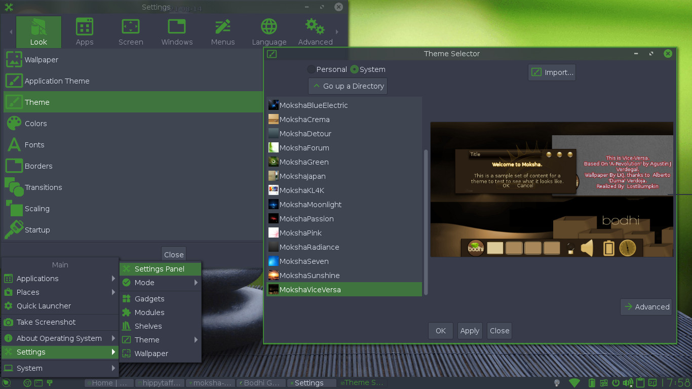
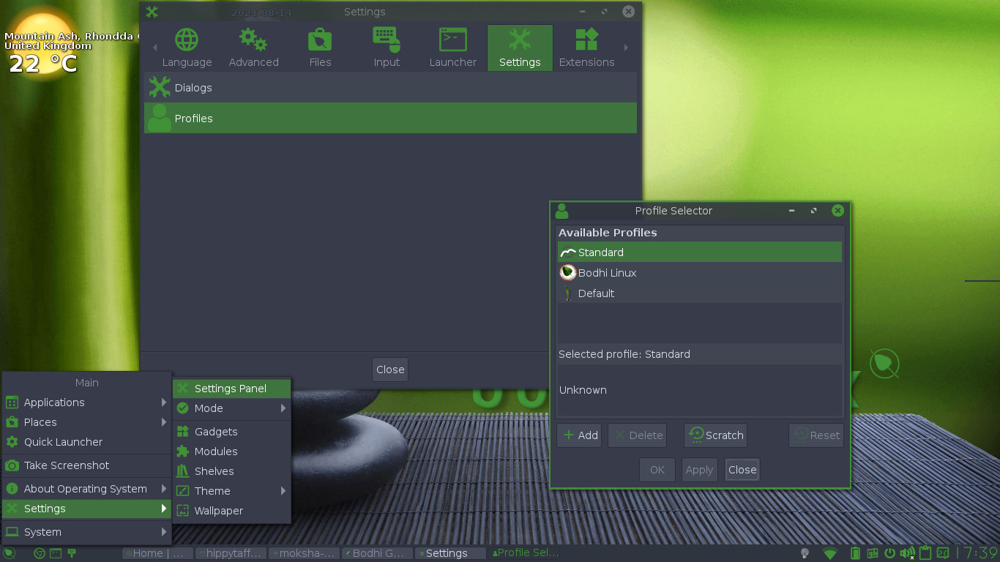

The Bodhi Guide to Moksha
Themes
Most new users often don’t realise that Moksha prides it’s self on providing the user with a lot of control when it comes to configuring their desktop, and has many themes available in the Bodhi repo. It is quite common for Moksha users to spend hours tweaking different settings to get it just right. Some of these users move on to actual theming, which is a whole world of it’s own and there is no scope here to cover it, but have been kind enough to share their hard work by sharing themes that they have creating.
Themes provide a way to package together all the different options that alter the look of your desktop. This can include everything from the background to the Clock Gadget, to the boarder color and everything in between.
Here we will cover the following:
Switching Themes
To see what
themes are installed go to Main
Menu →Settings → Theme. The standard
Bodhi iso, at the time of writing come with two themes by
default. Arc Green and Arc Dark. To install more themes, you can
use synaptic to search and select themes to install, or using
apt on the command line.
Here is a current list of themes. (13th august 2021) Note, if you want to install themes using apt on the command line, the theme name is prefixed with bodhi-theme-moksha-. For example, to install the vice versa theme you would do:
sudo apt install bodhi-theme-moksha-viceversa.
- arc - Arc Moksha Theme
- arc-dark - Arc Dark Moksha Theme
- arc-green - Arc Green Moksha Theme
- blingbling - Bodhi BlingBling Theme for Moksha
- blueelectric - Blue Colored Moksha Theme
- crema - Colored Moksha Coffee Theme
- detour - Grey-Blue Colored Moksha Theme
- e17gtk - GTK theme set for E/Moksha desktop
- forum - Bodhi Forum Theme for Moksha
- green - Green theme for Moksha
- japan - Japanese based Moksha Theme
- kl4k - Bodhi KL4K Theme for Moksha
- moonlight - Moonlight Moksha Theme
- passion - RedPassion Moksha Theme
- pink - Pink Moksha Theme
- radiance - Graphite Colored Moksha Theme
- seven - Windows 7 Moksha Theme
- sunshine - Sunshine Moksha Theme
- viceversa - Brown Colored Moksha Theme
To bring up the Theme Selector to preview themes and other things go to Main Menu -> Settings -> Settings Panel -> Look -> Theme.

The list on the left shows all the available Themes. Clicking on one will show a preview of the Theme background on the right. When you find a Theme you like, select it from the list and click OK or Apply. The changes will usually take place immediately. If they don't, try restarting Moksha (Main Menu -> About Operating System -> Restart Moksha).
You might be
wondering what the options Personal and System in the top left of the dialog mean. This simply
indicates in what directory the Theme
Selector is looking for Themes. The
System
option tells it to look in /usr/share/enlightenment/data/themes/. The Personal option points to ~/.e/e/themes/. If you are the creative type and want to create
your own Theme, you can save it here (See Creating Themes).
Also, please consider sharing it with the rest of the Bodhi Linux
community.
Advanced Themes
By now, you probably have tried out several different Themes. It's likely that you have found things to like and dislike about several of them, and perhaps you wish you could use the Menu from one Theme along with the Clock style of another. As mentioned before, the user is in control of their desktop, and the Theme Selector makes it very easy to mix and match different elements from different Themes.
Open the Theme Selector and click on the Advanced button in the bottom right corner. The dialog will expand into three sections.
The first section on the left, Theme Categories, shows all the different options that can be controlled by Themes. The middle section, Themes, shows all the available Themes on your computer. The right most section, Preview, is a preview window like the one in the Basic view.
In Theme Categories, all the options with a check next to them have an assigned Theme. In the Themes section, all Themes with the paintbrush and colors icon are Themes that have been assigned to at least one category.
Assign Themes
To assign a theme to a category, select the category in the Theme Categories section. Then select the desired Theme from the Themes section, and click the Assign button near the bottom left corner.
For example, say you like most of the vice-versa Theme, except you would prefer to use the Start button from moonlight. Open the Advanced Theme Selector dialog, select the modules/start category under Theme Categories, select the Vice-versa theme under Themes, and click Assign. You will notice that an icon displays next to the newly assigned category. This indicates the category's Theme has been changed. Changes will not take effect until you click OK or Apply at the bottom of the dialog. You can make assignments to as many categories as you want, and when you are ready, Apply all the changes at once. Using our example, if you go back and look at the modules/start category you should see a check next to it indicating that this category is assigned a Theme. Selecting the category will show you what Theme is assigned by automatically selecting it in the Themes section.
Remove Themes
If you want to remove an assigned Theme from a category, select the category and click Clear. Alternatively, you can remove all Themes by clicking Clear All. Then click OK or Apply to remove the assignment.
Base Theme
One special category of note is the Base Theme category. If a Theme is assigned to Base Theme, it will apply to all categories defined in the Theme.The Basic view of the Theme Selector is actually a streamlined interface for assigning this category.
No check marks will show next to affected categories to indicate they are customized, as the result of assigning the Base Theme. This is because assigning a Theme to any of the other categories will override any customizations from the Base Theme.
Any category without a Theme assigned (either directly assigned or from the Base Theme) will use the default theme.
Saving Themes
Now perhaps, you have spent several hours creating a custom Theme by mixing up themes from the Advanced Theme Selector. You want to try a new look, but not lose your current Theme. At this point, you are probably looking for the Save button, but you won't find it because it does not exist. To get around this, we can use Profiles. (Further information in the Profiles section.)
During your first boot of Bodhi, you may have been asked to select a Profile (Bare, Desktop, Fancy, etc.). Or you may have been assigned a default profile. All the changes you have made to your current theme are now a part of that Profile.
To open the Profile dialog, go to Main Menu -> Settings -> Settings Panel -> Settings -> Profiles. This will open the Profile Selector.

Your current Profile will be selected. Click the Add button at the bottom, and enter a name into the Add New Profile dialog that pops up. Click OK, and your new Profile will be added to the list of available profiles. Your new Profile is initially a duplicate of your current Profile.
Select the new Profile and click OK or Apply. E17 will restart, and you will see the same desktop that you saw before (this is expected because it is a duplicate of your other Profile). Now make some changes to your theme and/or layout of your desktop. Go back to the Profile Selector, and change back to your old Profile. You should see your previous Theme and layout.
Creating Themes
The above method of using Profiles is a quick hack and not the way to make an actual Theme. As mentioned above, this topic is beyond the scope of this document. To find out more ask on our forums or on our discord channel.
Change Just the Background
If you're interested in changing just the background (wallpaper), here's how. Go to Main Menu -> Settings -> Settings Panel -> Look -> Wallpaper. Uncheck the Use Theme Wallpaper option, and select the background you want. You may need to import the picture if you do not see it initially. Use the Picture dialog to do this.
|
Prev: |
Contents: |
Next: |